14,007
任务 RAW 样本
13,995 次提交与 13,995 次实际 FIFO 应用，另保留 12 个 tail ticks。加上 1,200 warmup 与 30 matched transient，共 15,237 个真实原生步。
这一已见开发单例保留原固定技能与调度，新增实际物理 getter、同刻 RGBD 和未来提交配对。原生执行来自已运行的 ARIS 分支；本 root 在 child 启动前取消重复执行，新增 worker 为 0，全局新增采集为 1。它不是 heldout、化学实验或已学习策略的成功示范。
13,995 次提交与 13,995 次实际 FIFO 应用，另保留 12 个 tail ticks。加上 1,200 warmup 与 30 matched transient，共 15,237 个真实原生步。
BEGIN、每 tick 的 PRE_WRITE / POST_STEP 与 END 完整。14,007 个 POST_STEP 位姿逐值匹配同 tick RAW；12 类安装 getter 全部 OBSERVED。
176 个合法未来提交配对，另保留 1 个终态 capture。JPEG 与原形状 400×640×1 float32 depth 均通过字节、解码、同刻 proprioception 与 clock 验证。
| 判据 / 读回 | 实际结果 | 可据此承认的范围 |
|---|---|---|
| 原固定技能 mechanism 与 sampled joint timing | TRUE | 旧合同重算；contact onset / confirmation 为 3599 / 3601，release 为 8039 / 8046。 |
| 旧完整 mechanical gate | FALSE | not_diagnostic=False 保留；没有新增成功训练标签。 |
| strict sampled hold / joint_with_hold | FALSE · 0/1 | 8028..8038 共 11 个缺双侧接触样本完整保留；采样点之间的连续接触未证明。 |
| mass / scene gravity | 0.13500000536441803 kg / [0, 0, −9.8100004196167] m/s² | 28,016 行实际 getter；不是仅从 authored USD 读取。 |
| gravity_disabled / simulation_disabled | 观测 FALSE · 每项 28,016 行 | 两个 disabled flags 均为 0；FALSE 与缺失证据 UNKNOWN 分开记录。 |
| instantaneous / permanent composer active | 观测 FALSE · 每项 28,016 行 | 记录的 force / torque buffers 全零；不能据此排除所有 backend constraints。 |
| 独立承重 / backend kinematic / complete constraints / signed load / robot unloading | UNKNOWN | 安装 getter missing 为 0，仍不补齐这些未测或未资格化证据。 |
| 训练准入 / 新 θ / reward / OPD / chemical success | 0 | OFFLINE_CAPTURE，policy delivery 为 None；没有完成学习或化学终点验收。 |
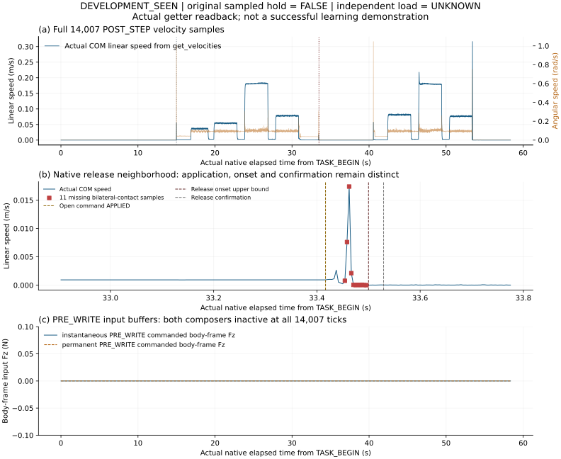
worker 实际 wall 为 414.9332901739981 s，对应 allocated GPU wall upper bound 为 0.11525924727055503 h；这是资源分配上界，不是实测 GPU 利用率。700 s 是 child wait deadline，另有最多 30 s termination 与实际 startup / cleanup，不承诺严格总 700 s。本页旧实验的 20 ms/decision 是虚拟预算，不是 LLM walltime 保证。
实际 source 为 eb807cffef785271e6fc6b7558598c29c6a8c76af46f043ea321a74935fab34c，148 个冻结成员，独立 source-only 等价审查在读取结果前完成。epoch 的继承前缀仍为 v1，完整身份绑定新 case 与完整协议摘要；旧 origin、目录式 formal flag、分母 16 和硬 700 s 描述不作当前声明。正式 episode 由真实 native clock 与 RAW 确认，当前分母 1。全部原 ROI、13 个旧视频和旧 16 例 strict 0/16、v1 启动失败及 v0.4 CPU 历史保持原状。
最终独立公开报告 · 结构化审计 · TRUE / FALSE / UNKNOWN 读回 · 最终输出 pin
保留的盲读器 FAIL · 盲读器冻结身份 · 保留的 v02 FAIL · v02 冻结身份
root RAW 接受范围 · root 图像与次级资料复核 · 另一分支 source-only 等价限制 · 次级冻结资料包（80 成员） · 公开白名单与范围
下一交付仍是已冻结的方法设计：共同 θ₀ 只用 S512，每臂祖先与适应数据的 unique union 为 1024；DP 训练尚未启动，承重与完整学习科学验收仍为 MAJOR_OPEN。方法与最小实验设计 · 预算与预注册合同 · root 设计冻结
当前推进的是物理证据 → 事件合同 → 因果记录 → 独立验收 → 策略吸收。先确认支撑、卸载与释放发生了什么，再决定哪些动作和结果能进入共享历史条件 Diffusion Policy 或学生状态 DAgger。本轮尚无新增合格训练记录、策略参数或化学成功结果。
重读原 4 校准＋16 测试轨迹，共 277,864 个任务样本；20 条均出现指定托盘接触、双侧手指接触和 8 点几何稳定的重叠机会，单条跨度 1.03–2.62 秒。滑动窗不增加 episode 分母。
这些机会只支持固定技能的机制诊断。实际重力、力的符号/单位、机器人卸载与外部约束尚不足以独立判定承重：20/20 UNKNOWN。原 strict hold 的 0/20 成功、20/20 FALSE 保留；新交接合同不改写旧分数。
53 个诊断文件已 byte pin；root 核对输出身份、角色、旧严格缺口与候选标签，未再次执行全部私有 RAW 解码。
冻结组件绑定 14 个源码/合同/CPU证据文件，22 项 CPU 检查通过；15 成员源码包已重开核对。已安装 SDK 的 disable flags 为 uint8 (count,1)，1 表示禁用；源码/API证据与真实运行资格分别记录。
PRE_WRITE 在写入清空外力缓存前读取，POST_STEP 在积分更新后读取；每次 getter 前后检查原生时钟一致。实际运动、质量、重力和施力缓存增加可审计观测，CPU 假 getter 不证明原生物理成立。
active backend kinematic、完整约束、接触力换算与卸载证据仍有缺项；缺项保留 UNKNOWN。
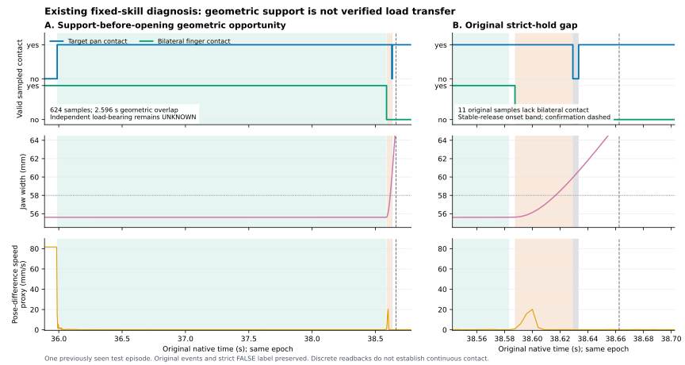
v0.2 原反例是 0 capture → 10 chunk → 20 成功标签 → 40 submission → 50 application。v0.3 修复了未来控制回填，但独立复核发现另一缺口：物理 onset [40,50]、恢复标签 160、审计到达 170 时，仍误判已验证恢复 TRUE。早物理 onset 不能证明晚到的审计在早标签时已知；v0.3 的 80 项旧 CPU 检查和 root 10 个控制 probes 不覆盖此恢复缺口。
v0.4 按标签的 (native time_ns, global seq) 前缀检查审计 anchor；已知恢复不能读取未来 anchor，UNKNOWN 继续保留未知，晚审计后可另出具标签 180。已验证恢复成功也须相关控制真实 submission＋APPLIED；REJECTED、DROPPED、TIMEOUT 不能成为恢复成功，原执行失败须为 EXECUTION_OUTCOME。
98 项 CPU 测试（保留 80＋新增 18）和 13 个独立 probes通过；248 成员、608,056 字节源码/合成证据包重开与归档源码 13 probes 通过。40 成员 manifest 为 be488296…。这是可信 collector 数据接口的 CPU 修复；全任务、物理结果与生产接入仍需实际独立验收。
v0.2/v0.3 源、54/80 项历史检查与独立反例逐字保留。生产行、当前入训行、原生执行、GPU 与新 θ 均为 0；合成 fixture 不是真实机器人或原生 RGB 数据。
dev_seen_handoff_instrumentation_001 是原场景、原控制、原排程的已见开发观测单例。执行源码冻结 148 个文件，独立预执行 23 项源码/CPU 检查通过；独立 RAW reader 在读新结果前冻结，14 个 CPU 负例通过。预执行检查没有证明真实启动成功。
v1 在 2026-10-13 19:35:07 UTC 因 cases 父目录不存在触发 FileNotFoundError，在 AppLauncher 启动前退出；终止状态 FAILED_RETAINED，worker wall 为 0.240559 秒，530 字节日志保留。同 v1 再次启动被 prior-output guard 在 SDK 启动前拒绝。资源拒绝与此次启动失败均不算原生物理 episode。
本例 formal/native physics、RAW、RGB 与新视频均为 0；没有承重测量结果，load-bearing 保留 UNKNOWN。允许的采集设计为 OFFLINE_CAPTURE，policy image delivery 未获证明；成功标签、当前训练准入与新权重为 0。启动修复须另行冻结与验收。
下一次交接合同需区分 support_touch、verified_load_ready、finger_release 与 stable_supported_release，冻结载荷、运动、dwell 与时间误差规则，并向强规则基线提供相同公开反馈。私有 verifier 读回与 actor/teacher 输入各有白名单；只有真实新示范通过独立结果与因果准入后，才开放相应成功训练数据。
| 组件 | 凭证与源码 | 当前证据边界 |
|---|---|---|
| 旧 20 条离线诊断 | summary · 53-member runtime pin · root readback | 原角色、事件与分数保留；未证明新策略可行或不可能。 |
| 物理 collector CPU 组件 | 14-member release · 15-member 源码包 · 重开凭证 | release SHA 19a8c09a…；CPU 与安装 API 证据，不是原生承重成功。 |
| 因果捕获 v0.3 历史 | 27-member manifest · 113-member CPU 源码包 · 原 root 控制前缀/恢复疑点凭证 · 确定恢复反例 | manifest SHA dff7372f…；控制修复保留，恢复缺口已独立重现，作为历史源码保留。 |
| 因果捕获 v0.4 CPU 修复 | 40-member manifest · 248-member CPU 源码包 · CPU98/独立13/归档13凭证 · 独立修复复核 · root 冻结制品读回 · 复现说明 | manifest SHA be488296…；archive SHA 7ee89534…；仅合成 CPU 接口与只读旧 metadata，production/train/native/θ=0。 |
| 原生 instrumentation v1 | 148-file release · 23项 preexec · 前瞻 RAW 验收协议 · 冻结 reader 源码包 · root 启动失败更正 | source release SHA 0cc48392…；FAILED_RETAINED 在 AppLauncher 前退出，formal/physics/RAW/RGB=0，无承重结果。 |
公开包仅含筛选文档、摘要/索引、矢量图、CPU源码与冻结审查凭证。大私有 RAW、帧、原生 SDK 与策略权重不在本次公开范围；这些材料不是公开原生场景完整重执行闭包，也不是训练数据集。
研究主线：物理时间合同 → agentic 经验生成 → 独立验证与恢复 → 共享历史条件 Diffusion Policy → 学生访问状态回标／DAgger → 部署反馈。
RL 和多专家蒸馏是条件扩展；完整学习系统尚未完成。最新完成四个实际stateful控制器、64软件对照、1条原生接入和32条原生配对实验；逐条独立RAW验收与32次诊断重积分均完成，四方法各8/8，强batch平局。28条VerifiedReplay元数据和852个候选已验收，合格训练记录与本轮新权重均为0；两页ICML组件稿、全部32时序图及完整证据包已在下方提供。此前完成四种任务图的12条主机械轨迹和2条哨兵、7172个调度条件的独立复算，扩充方案、图表与ICML稿；全新4校准＋16条配对原生时间测试完成并独立复算，4条实际视频与8共享资源开发见证新增；严格hold、强规则解释和旧日志纠正完整保留。此前接入 benchmark 原 A-r7 场景，新增3条完整机器人仿真、40719个任务样本和3段新 RGB 视频；5秒接触合同下原调度提前、目标时刻派发迟到、提前补偿通过。这是1个实例的确定性接口对照，没有新策略权重。此前2160次参照保护对照及5段视频保留；稳定保护60/180，故障变化114/360、原参照损害0。此前10800次历史适应仿真分别保留，同候选下主动公开历史66/180、清空57/180，9修复0损害；诊断成本与陈旧支持另行评估；此前提前恢复51/180与特权图66/180保留，没有新方案的VLA学习或真实化学收益证据。
化学操作可能要求在触发事件后及时结束操作，也可能要求持续到指定时刻。控制器接收了停止指令，样品仍可能受热、管路仍可能流动；观察、推理、排队与恢复期间，反应也持续向前。单次动作完成或最终成功标签不足以判断这些任务。
为每个必要操作规定物理参照事件、实际效果、时间窗口及独立测量规则。报告任务结果和时间结果，再计算联合结果。缺少证据保留 UNKNOWN。
恢复动作消耗剩余窗口，也可能影响其他反应。新批次成功不能覆盖原批次的失败。只有适用范围、依赖、资源和持续时间均获得支持，才考虑原尝试恢复。
我们的中心问题是：经过物理时间验证的恢复经验，能否进入一个共享、具有历史条件的机器人策略，并在新响应和新依赖关系下保持有效？Agent 管理经验生成与工程改进；低层策略执行动作。四个 harness 和训练工具是实现基础，方法优势需要匹配实验支持。
任一必要条件被可靠判为 FALSE，原尝试即失败；全部 TRUE 才联合 TRUE，其余为 UNKNOWN。物理判定与公开在线估计分别保留。
| 案例 | 关键问题 | 要验证的机制 |
|---|---|---|
| 01 · 接入与校准 | 相机、机器人、设备和时钟是否对齐？ | 区分捕获、交付、发送、接受和物理效果；固定版本与误差范围。 |
| 02 · 事件后限时操作 | 某个真实触发后，操作能否在窗口内完成？ | 感知迟到、决策迟到和执行迟到分别归因；比较校准计时器。 |
| 03 · 加热与过程停止 | 设备关机后，样品是否仍处于有效暴露？ | 设备终点、过程终点、化学终点独立；响应补偿不能只看 ACK。 |
| 04 · 多任务共享机器人 | 操作顺序、依赖和资源竞争是否让窗口失效？ | 同传感器与预算的确定性调度/MPC，以及新的任务图留出。 |
| 05 · 恢复或终止 | 继续观察、重试、换技能还是开新批次？ | 原失败不可回滚；成功支持与持续时间支持共同进入恢复判断。 |

打开完整矢量图 · 局部闭环：执行 → 验证 → 诊断 → 恢复。全局闭环：部署反馈 → twin 校准/新数据/策略更新 → 留出验收。
| Harness | 职责 | 输出 |
|---|---|---|
| 接入与预检 | describe / calibrate / align clocks / preflight | 明确单位、权限、延迟与版本。 |
| 世界与经验 | reconstruct / step / replay / calibrate twin | 有来源的示范、失败与真实过程误差。 |
| 技能构建 | compose / repair / collect / train / label student states | 候选技能、教师支持范围及全部成本。 |
| 部署与诊断 | execute / monitor / diagnose / recover / terminate | 完整尝试、接管、独立结果与后续实验。 |
当前时刻、参照事件和动作持续时间均用区间表示。候选完成区间为 [t⁻ + d⁻ − τ⁺, t⁺ + d⁺ − τ⁻]；落入窗口只说明在支持假设下可能及时，不能替代独立结果。
还必须检查执行成功支持、前置条件、其他必要操作、依赖与共享资源。重置生成新尝试，原失败记录保留。
先运行共享的历史/语言/合同条件 Diffusion Policy，再用相同教师预算的学生状态 DAgger。训练准入分别对待成功、失败、恢复和 UNKNOWN；教师建议不等于已执行成功。
只有覆盖可信、确有决策瓶颈时才启用 option-level offline RL；online RL 先在校准仿真中进行。分布蒸馏需要兼容的动作与去噪目标。
已验证的接口、技能代码、配置与修复。记录适用条件、版本及创建/复用成本。
只含允许公开、已经到达的观测和反馈。多次尝试逐次测量适应，并用清空/打乱记忆作对照。
固定感知、twin 和 harness，关闭在线专家，清空上下文后再测保留效果，才能归因给参数学习。
GPT-6 Astra 定位为任务级 agent / data engine。DP、RL、OPD 是候选学习工具；固定串联训练阶段本身不能证明 Robot RSI。真实过程不等待 agent 返回。
覆盖三种机械响应、三种反馈延迟、两个窗口、三类指令故障。原生积分记录173,016个状态样本。
策略使用公开编码器和设备反馈；RGB为实际渲染记录。它不是视觉策略训练或54种独立化学任务。
没有独立反应终点，没有新学习模型。时间 TRUE 不自动成为化学任务 TRUE。

| 控制 | 全部54例 T / F / U | 标定范围36例 | 响应变化18例 |
|---|---|---|---|
| 命令计时器 | 8 / 46 / 0 | 7 / 29 / 0 | 1 / 17 / 0 |
| 普通重试 | 12 / 41 / 1 | 11 / 24 / 1 | 1 / 17 / 0 |
| 校准调度器 | 17 / 36 / 1 | 16 / 19 / 1 | 1 / 17 / 0 |
| 时间过滤器 | 17 / 36 / 1 | 16 / 19 / 1 | 1 / 17 / 0 |
主要发现：校准调度器与时间过滤器结果相同，强基线差值为0。标定范围内相对普通重试多5例时间 TRUE；变化响应下两者只有1/18时间 TRUE。命令计时器有46例 ACK及时、物理终点却不及时。
参照是原生转子轴角跨过2 rad；终点是转速换算的流量代理≤0.005 mL/s持续0.2 s，时间取持续低流量段的起始区间。没有测量真实液滴或化学反应。
13条轨迹的候选时间被预测 eligible，最终却非 TRUE；其中三条属于同一范围内边界案例，其他来自超出标定的响应变化。持续指令故障会增加第二次恢复成本。这说明成功条件下的时长预测不是完整恢复准入，也不是物理证书。
显式反馈与控制等待推进模拟过程；实际 CPU/渲染耗时只记录，未推进模拟时钟。配对审计仅证明54组分叉前机械前缀相同，不宣称全幅RGB精确配对。未证明 VLA、权重吸收、真实安全或化学收益。
此前C5提前预测实验新增32条闭环/10272帧RGB，复用16条来源：线性预测14/16流量TRUE；二次预测15/16流量TRUE，但命令与流量同时TRUE降为10/16。C6校准timer已能满足当前组件窗口。这些强基线和反例保留，不转写成学习方法优势。
此前C5实验报告 · 历史ICML补充稿V5。历史稿尚未按新故事完整改写。
固定原B事件、首A-stop无效、A/C依赖与共享设备，运行强batch、HSM、EDF、MPC四个实际闭环。八场景交叉两任务图、50／450ms设备占用、D=2.8／3.1s；D同时改变C时间窗口与A上界。每方法8条，共32条单epoch原生MuJoCo轨迹、38,400物理步和38,432 RAW，全部通过独立事件、命令、时钟、资源和恢复验收。
手机可横向滑动查看完整表格。
| 方法 | 原合同 T／F／U（每8条） | 实际决策次数 | 候选计费 | 最大实际预约等待 |
|---|---|---|---|---|
| 强batch | 8／0／0 | 1–1 | 282–370 | 0ms |
| 公开反馈HSM | 8／0／0 | 1–4 | 286–901 | 0ms |
| 事件／资源EDF | 8／0／0 | 3–4 | 284–1197 | 20ms |
| 联合区间MPC | 8／0／0 | 8–15 | 1548–3131 | 10ms |
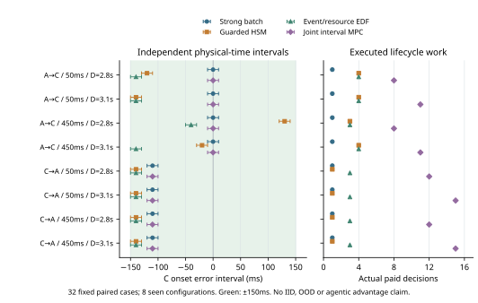
四方法各8/8，强batch与三种反馈／重规划方法平局。全部实际A2／C1，未证明额外重规划提高成功或减少动作。batch8决策／2528候选，HSM19／4350，EDF27／5382，MPC92／18392。每次决策的20ms是虚拟计费，native继续推进，host计算本身暂停plant；没有实时LLM保证。
另32次独立实际命令重积分（38,432诊断样本）均state／time误差0，单独记数，不把主分母扩成64。7,712 captures、7,648已交付packets与38,432 public actor frames分开；EDF／MPC各4例有非零预约等待，最大20／10ms，batch／HSM为0。八配置已开发使用，不是heldout、IID统计率或OOD；本轮没有新VLA／RL／OPD权重、GPU训练、机器人硬件或化学终点。
原67源码和11裁判源码在执行前分别冻结；两项启动／resume旧红例、新CPU12检查和独立4回归保留。SETUP没有数值nq getter，维度来自冻结guard、三轴RAW和独立重积分，未填造读回字段。完整实验仍需合格数据、实际学生策略与任务空间留出。
两页ICML格式组件稿 · 论文源码与实际数据 · 全部32逐行结果 · 完整第三独立审计 · 完整源码与原生证据包 · 逐例成本与实际队列 · 范围、方法与后续门槛
已实现强batch、公开反馈HSM、事件／资源EDF和联合区间MPC的完整软件生命周期。共享原B事件、传感器、模型和累计预算；已提交预约不可取消，回执不作物理成功。命令身份重复、付费计算期间资源变化、非法对象输入、B力矩维护与短暂停止的旧红例保留，独立31项行为检查、11项回归、64条软件闭环、12条压力测试和8条旧公开观测回放通过。
手机可横向滑动查看完整表格。
| 方法 | 已见软件条件证书 | 决策次数 | 候选总数 | 实际A请求／C请求 |
|---|---|---|---|---|
| 强batch | 16/16 | 1–1 | 282–370 | 2–2；C 1 |
| 公开反馈HSM | 16/16 | 1–4 | 286–901 | 1–2；C 1 |
| 事件／资源EDF | 16/16 | 3–4 | 284–1197 | 2–2；C 1 |
| 联合区间MPC | 16/16 | 8–15 | 1548–3131 | 2–2；C 1 |
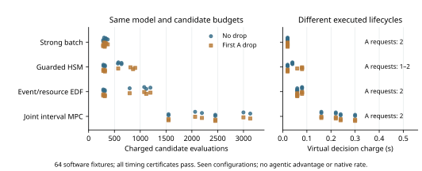
限定新原生集成：固定A→C／B占用450ms／D=2.8s，HSM，首A-stop失效；MuJoCo实际1200步／1201 RAW，裁判joint=TRUE。独立核对native clock、连续推进的付费两tick、原anchor、真实提交／ACK／效果、资源与预算，原plant／XML／裁判字节保留。只新增1条开发episode，不是正式32、机器人硬件或化学结果；命令重积分是诊断另计。
VerifiedReplay已核对20条机器人＋8条开发记录的来源与原角色。852个图像→未来提交候选中832因策略图像交付时间缺失保留UNKNOWN、20个尾帧拒绝；完整time＋strict-hold成功示范0/20，入训条目0。本轮VLA／RL／OPD新权重0；既有合成学习成果另列，不能替代此处机器人策略吸收。
接续已有C5颜色／流量和thermal-runtime负结果，后续场景扩展到支撑交接、负载停转、定量加液、样品热暴露、并行共享资源和多episode适应。新增剂量与样品热模型尚未验收；DP、失败数据RL、学生状态OPD与任务图留出均有明确数据／因果／强基线门槛。
四控制器完整CPU源码与结果包 · 独立审查与旧反例修复 · 单例原生完整证据包 · 独立原生验收 · 数据接口源码与28记录包 · 训练准入摘要 · 六类场景与完整实验设计 · 本轮方法与范围
IsaacLab／PhysX原生仿真；所有方法统一K1600、原机器人轨迹与机械门槛。四条全新校准先通过独立RAW、机械、事件、九关节参数及完整状态preimage验收，再冻结经验包络；随后执行全部16条测试。全部16都进入分母，不使用测试结果改时间窗口、源、K或校准。
手机可横向滑动查看完整表格。
| 固定规则 | 时间+机械primary | contact／release／gap | 原机械任务 | strict hold／primary+hold | 拒绝 |
|---|---|---|---|---|---|
| 名义延迟 | 0/4；T/F/U 0/2/2 | 0/4 · 2/4 · 0/4 | 4/4 | 0/4 · 0/4 | 0/4 |
| 公共FIFO补偿 | 0/4；T/F/U 0/0/4 | 0/4 · 4/4 · 0/4 | 4/4 | 0/4 · 0/4 | 0/4 |
| 校准中点 | 4/4；T/F/U 4/0/0 | 4/4 · 4/4 · 4/4 | 4/4 | 0/4 · 0/4 | 0/4 |
| 精确联合网格 | 4/4；T/F/U 4/0/0 | 4/4 · 4/4 · 4/4 | 4/4 | 0/4 · 0/4 | 0/4 |
校准中点与精确联合网格的primary计数相同。当前四个固定实例未证明精确求解带来额外物理收益；7172数学条件的solver核对是另一种证据。 总体primary T/F/U＝8/2/6：两条release明确LATE，六条joint为UNKNOWN；先验多数contact/gap是INDETERMINATE，不能统称确定物理失败；先验gap上界仅约0.94–0.99µs越过25ms，认证对native／名义网格边界敏感，不代表明显gap违约。strict sampled hold与primary保持同16条分母；接触到复合稳定释放的时间差不等价于全过程保持，张开后到复合释放前的负点完整保留。
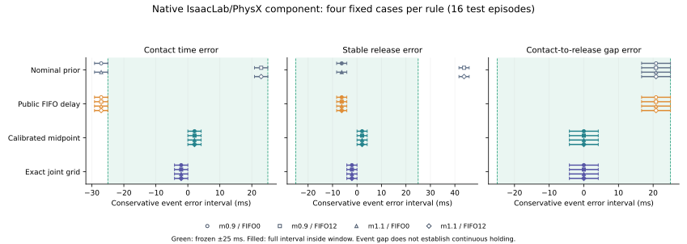
视频按执行前冻结camera roster选择四种方法的同一实例，未按输赢挑选；每帧绑定实际native clock、JPEG／depth hash，全部解码和播放验证；6fps仅展示轨迹，±25ms计分使用240Hz RAW。测试任务样本224,132；校准53,732另计。三时点K／D／力限和56物体＋9articulation状态preimage可重算；不代表逐tick增益遥测。0／12tick FIFO只延迟位置目标，不是全通信或LLM推理耗时。经验延迟盒非真实支持或统计CI；四个固定场景没有随机seeds，D／H与mass／FIFO绑定，不能推断独立factor效应。
公开证据纠正：旧四条K800校准的setup/boundary_state实际含warmup末九DOF K／D／force读回；此前“完全没有active readback”是过度概括。专门的after30／task-start／end三快照仍缺。旧封存原文和负结果保留，新纠正独立绑定getter源码与四条RAW，不重新解释失败或改预算。
全部16行结果 · 独立完整测试验收 · 独立四校准准入 · 两页ICML机器人结果稿 · 范围与成本 · 旧日志读回纠正 · 论文、源码和下一研究门槛
新增三转子MuJoCo原生夹具：B先发生真实不可撤销q-crossing，A首次停转请求被丢弃，A／C共享不可抢占总线，C带时间窗口和A↔C顺序约束。一个12秒开发例在公开ACK／力矩反馈后合法retry，同时C运动在总线排队时继续；8个2图×2占用×2deadline开发见证均通过独立RAW、公共packet因果、预算、事件身份与命令重积分验收。
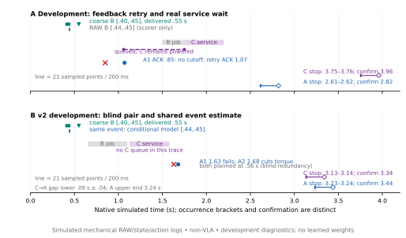
手机可横向滑动查看完整表格。
| 证据 | 主分母 | 结论与限制 |
|---|---|---|
| 单条反馈retry开发执行 | 1／1201 RAW | 保留原B anchor；C排队69ticks；不是OOD或统计效果 |
| 八条同信息强batch资源见证 | 8／9608 RAW | 8/8 joint；两A请求预先批量安排，不等价反馈适应 |
| 三方命令重积分 | 诊断另计 | 8 controlled＋8 producer replay＋8独立replay，共24 epochs；主分母仍8 |
| 四方法初始适配器 | 18 CPU tests＋32初始plans | 该轮仅初始规划；本轮闭环与32配对已在上方独立验收 |
强规则batch已解决全部8个开发格，当前场景不能支持query或agentic必要性。公共known-model q／v历史可合法细化同一个B事件，四种方法共享；coarse50ms不是不可约信息下界。保留旧草案在声明模型／动作域下6/8资源不可达的负预检。已见开发配置不能重新称heldout；已核对的blind冗余不能写成学习。
四种方法扩充为校准batch、HSM＋retry、EDF资源重规划和联合区间MPC；统一public estimator、候选计费与动作预算，pending预约guard独立18项检查通过。该轮为初始planning原型与规格；本轮闭环native实现和32配对结果见上方独立增量。机制图与ICML组件稿在本增量说明中提供；当前证据都是可控仿真机械组件，新增VLA／RL／OPD权重0、真机0、独立化学终点0。
12秒原生开发完整包 · 八见证完整源码与RAW · 第三独立复算 · 同信息初始控制器可复验包 · 两页ICML资源组件稿 · 完整生命周期规格及尚待实现部分 · 统一故事、方法、论文与图
Isaac Sim 5.1／PhysX，原重载1.2、原动作和原机械门槛。独立117项源码在执行前冻结，只将双夹指刚度800→1600；实际K在变更前／后／任务末读回。一条资格执行、RAW一致和原机械任务各1/1；三个时间合同全部EARLY，主joint为FALSE。资格不替代新校准，不追溯修改旧四条载荷失败记录。
| 观测 | 独立RAW结果 |
|---|---|
| 任务样本／RGB-D／视频帧 | 13,427／172／168（来自同一episode） |
| 运输最大相对漂移／最终误差 | 1.739 mm／0.2161 mm |
| 运输双侧接触比例 | 0.998767；不等价全过程连续保持 |
| 严格sampled hold | FALSE；11负点在张开后至复合稳定释放前 |
| 新校准／留出时间测试／策略训练 | 0／0／0 |
日志限制：变更前D／力限完整数组和物理状态token preimage未导出；其不变性只能核对冻结运行时断言及报告hash，不能独立重算完整三时点安装。实际变更后／末九个K、D、力限一致。一次固定实例的机械通过未证明因果根因或统计效果；严格hold为FALSE的事实完整保留，不能用更换释放定义消除。
独立审计初版在执行后、未看结果时冻结；V2在看结果后修正退出schema，旧误拒及相机schema错误保留，不称执行前独立审计。约0.11425卡时，进程组已清空。新4校准＋16配对测试将补齐变更前后末的参数和状态preimage，四条全新校准全部独立准入后才拟合包络与测试；全部方法统一K1600，强joint使用已核对的精确网格求解。
资格完整说明 · 独立资格摘要 · RAW机械与事件复算 · 172张RGB-D及168帧独立核对 · 审计时序与版本披露 · 视频与全帧解码收据 · 原生帧时钟和hash
Isaac Sim 5.1／PhysX中，原场景四条校准已全部完整执行，共 53,732 任务样本、36 张原生 RGB 快照，资源上界0.40953卡时。较轻两条原机械任务通过；较重两条在运输中失去夹持、没有稳定释放事件。本批未拟合包络，原16条时间测试未启动。四条保留共同分母，不以删除失败来获得校准通过。校准用原未调度技能，时间诊断提前；完整指令不能算时间成功。
| 质量倍率 | 位置目标FIFO | 任务样本 | 机械任务 | 稳定释放 |
|---|---|---|---|---|
| 0.8 | 0 ticks | 13,427 | TRUE | 观测到 |
| 0.8 | 12 ticks | 13,439 | TRUE | 观测到 |
| 1.2 | 0 ticks | 13,427 | FALSE | 缺失 |
| 1.2 | 12 ticks | 13,439 | FALSE | 缺失 |
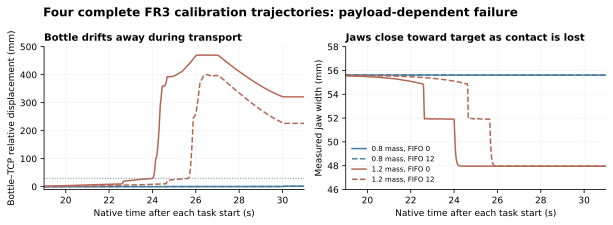
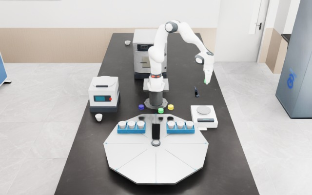
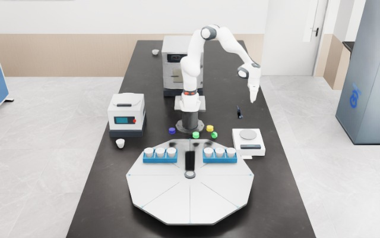
轻载严格hold诊断的13个负点均位于张开到复合稳定释放的尾段，张开前0负点；不解释成提前夹持失效。安装惯量读回的旧审计假拒另行保留，新审计使用执行前已冻结的安装容差；所有轨迹、事件、队列和机械计分仍exact，不能与真实运输失败混为一谈。
后续独立单因素资格试验已在原重载、动作和机械门槛下完成夹指刚度候选验证，其一条结果使用独立分母；变更前阻尼／力限数组和物理状态preimage缺失，不能称完整三时点读回。下一步仍须在补齐日志的新源码下完成四条新校准，再准入正式测试；不追溯改判此处旧失败。
用户指定的 MATTERIX 已有 waiting、物理/语义过程时间、异构并发、HSM技能和workflow verification；Auto-Engineering 已有四harness、BC/DAgger及工程工件复用。我们的候选增量要在这些基础上证明独立紧合同、已发生外部事件下的有效恢复，以及共享actor的同预算留出收益。双转子反事实保护、有限调度正确性和本轮载荷诊断都不能替代这些学习与化学验证。
本轮负结果报告 · 所有4条独立验收及缺失槽位 · 完整准入拒绝／失败定位 · ICML格式负结果补充稿 · 可导出图
小型RAW诊断归档 · 前瞻资格设计源码（不含执行结果） · 私有四校准归档独立解包复算收据。约293MB完整必要证据留在研究服务器，网页仅给清单和SHA，不公开SDK／场景资产。
新增策略权重、真实机器人及化学验收均为零。完整RAW留存在研究服务器；网页仅发布摘要与来源绑定的派生图表，不将快照或归档重复算作新episode。
本轮三个子 agent 分别实现时间调度、扩充任务图与独立审计。研究设计现覆盖 8 类任务、18 个候选方法；这些设计项与已执行实验分开。论文主问题是：在物理事件期限、并行过程和原始参照下，如何生成、验证并吸收有效恢复经验？已有物理时间策略、任务期限控制和 Robot RSI，因此不以“没有方法关注时间”或“串联训练阶段”作创新主张。
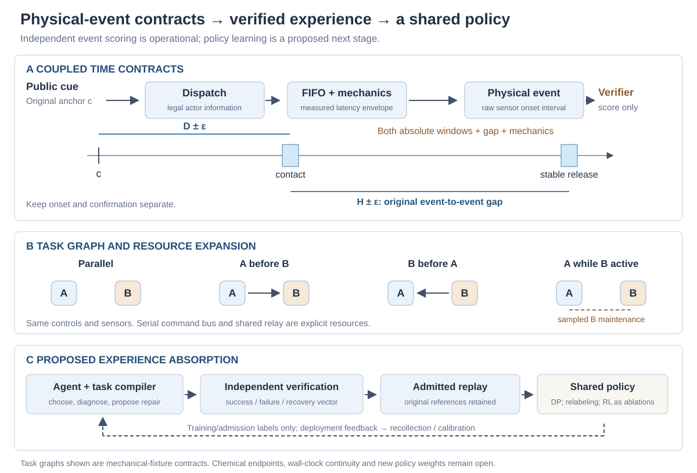
6,912 个参数格条件＋256 个固定 seed 合成条件＋4 个边界例。新候选在 7,172/7,172 条件上与独立完整枚举一致，其中 2,606 可行、4,566 不可行；第三个整数实现复核了 299,040 对派发格点。旧联合调度保留 61 个误拒，修复位于独立新版本。中点法另有 994 条件，两绝对窗口通过但事件间隔失败。它们是数学条件，新增物理 episode 数为零。
| 方法 | 稳健联合通过 / 全条件 | 保留异常 | 显式拒绝 |
|---|---|---|---|
| 名义补偿 | 409 / 7172 | 975 | 0 |
| 显式 FIFO 补偿 | 788 / 7172 | 981 | 0 |
| 独立校准中点 | 2375 / 7172 | 1198 | 0 |
| 旧联合调度 | 2545 / 7172 | 1198 | 3429 |
| 修复后的精确候选 | 2606 / 7172 | 0 | 4566 |
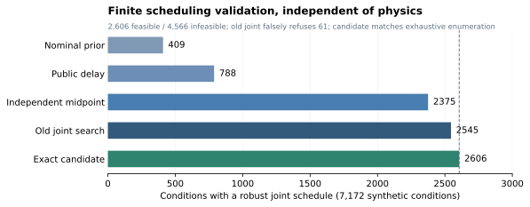
任务关系包括并行、A→B、B→A、A 在 B 活跃时完成。三种同信息规则控制共享串行指令通道和继电器。12 条主轨迹＋2 条单列哨兵共 14,014 个受控原生样本，每条一个完整 10 s epoch；另一个全功率参照积分为 1,001 个诊断样本。独立审计重积分并重判全部控制、事件、队列与原合同，最大状态误差为零。复算不增加实验样本数。
| 控制 | 主 joint TRUE / FALSE / UNKNOWN | 原参照违例 episode | 必需 B 维护通过 |
|---|---|---|---|
| 独立窗口＋固定顺序 | 0 / 4 / 0 | 4 / 4 | 0 / 1 |
| 图约束调度 | 1 / 3 / 0 | 3 / 4 | 1 / 1 |
| 图约束＋原参照保护 | 4 / 0 / 0 | 0 / 4 | 1 / 1 |
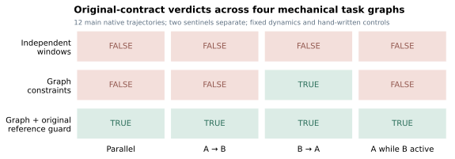
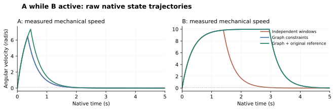
本组件保护的是预先固定的全功率反事实参照，不能替代已经发生的外部化学事件 ledger 恢复。成功哨兵证明一个可达合同；依赖循环哨兵拒绝派发、保留完整无操作物理轨迹，合同记 FALSE，正确拒绝另报。host 计算期间该 CPU fixture 暂停，只登记服务/交付时延推进物理，不能据此宣称真实 agent 等待时过程连续。
原 FR3 扩充源已冻结：4 条校准＋16 条测试，改变质量/惯量、实际位置目标 FIFO、接触/稳定释放/间隔三个25 ms合同。资源满足24 GiB门槛后已启动校准，测试须等独立校准审计及包络冻结；当前执行快照单列，不混入上述组件计数。没有新增 DP/RL/OPD 权重或 C5/C6/C13 化学验收。
本轮完整报告 · 绑定结果 · 背景、近邻、数学与学习设计 · 原场景与缺失接口 · 后续科学验收 · FR3 执行快照 · ICML 格式组件补充稿
完整数学代码、条件、结果及审计归档 · 全部物理 RAW 与冻结代码归档 · 数学独立审计 · 物理独立审计 · 16项一手文献
复用 ChemRM benchmark 原实验室：56 个刚体、9 个关节系统；本轮操作 FR3 A、原棕色试剂瓶、天平和转盘。独立连续物理执行共 40,719 个样本，生成 252 帧新 RGB 视频。V79/V80 的取放与释放边界恢复属于既有 benchmark 证据，未重复计入。
新 B-T0 合同：公开提示后 5 s ±50 ms 形成双侧夹指接触。三组使用同一原生技能；提前调度只使用事先冻结的 0.175 s 接触延迟上界。此轮验证机器人计时接口，没有训练 DP/RL/OPD 或评测 M1 记忆。
| 条件 | 发指令间隔 | 独立物理接触间隔 | 时间诊断 |
|---|---|---|---|
| 原轨迹调度 | 4.000 s | 4.171–4.175 s | EARLY |
| 到目标时刻才发指令 | 5.000 s | 5.171–5.175 s | LATE |
| 补偿已知接触延迟 | 4.825 s | 4.996–5.000 s | PASS |
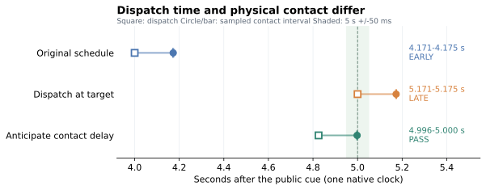
C5 保留颜色变化后 2 s 内停滴；C6 保留实际搅拌 120±10 s；C13 保留随机 A/B 时间及无钟表 M1 轨道。新夹持任务不能替代这些化学终点。加热与多设备并行列为待校准任务。
释放边界可沿 V80 重建；若反应或搅拌仍在运行，必须证明独立过程时钟连续，不能拼接两个 native epoch 或重置原合同起点。verifier 真值只进入计分与准入通道。
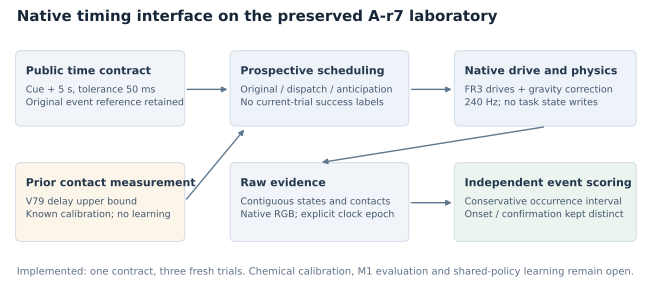
完整场景、数学合同与实验设计 · 任务注册表 · 原始数据独立审计摘要 · 执行报告 · ICML 格式实验补充稿 · benchmark 原场景与 V80 证据
本轮已执行，不是实验计划：180份实际公开历史 × 3种当前故障 × 4个控制，共2,160次原生轨迹、2,162,160个物理样本。以下前四段为状态与命令驱动的MuJoCo回放，第五段为既有SafeLab Isaac机器人失败示例。全部明确来源；没有把代理机械动画或既有作业算作新化学结果。
上轮实际配对：左侧清空历史FALSE，右侧主动历史TRUE。相同模型、故障和合同，记录物理停止及命令时间。10秒、25fps；重建误差0。
打开／下载MP4上轮反向变化：首条恢复有效，旧丢失支持导致提前停止。原2rad事件消失，原合同FALSE；之后的恢复不能改写它。既有实验回放，不增加样本。
打开／下载MP4同一变化条件，保留陈旧支持失败；保护控制将首条ACK限制在公开预测参照之后，保持原任务并通过。来自本轮矩阵中的两条轨迹，不额外计数。
打开／下载MP4稳定丢失条件下，提前使用历史可通过；参照保护后没有支持计划，回退规则错过窗口。不能只报告保护消除了损害，还必须报告通过机会损失。
打开／下载MP4本机已完成的独立Isaac PsiBot烧杯作业，源结果为几何保护中止、任务失败。约12.87秒、193帧；字幕明确标记来源及推理暂停不在播放时间内。它是仿真机器人基建展示，Paper B本轮新增执行计数0；不等于真机、液体反应或方法验收。
打开／下载机器人示例MP4| 控制 | 稳定TRUE / FALSE / UNKNOWN，分母180 | 变化TRUE / FALSE / UNKNOWN，分母360 | 变化相对清空：修复 / 损害 |
|---|---|---|---|
| 保留历史 | 66 / 114 / 0 | 100 / 260 / 0 | 0 / 14 |
| 清空历史 | 57 / 123 / 0 | 114 / 246 / 0 | 0 / 0 |
| 参照保护 | 60 / 120 / 0 | 114 / 246 / 0 | 0 / 0 |
| 当前尝试复核 | 57 / 123 / 0 | 114 / 246 / 0 | 0 / 0 |
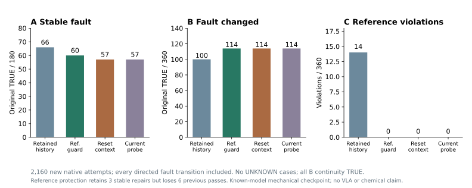
参照保护稳定条件相对清空保留3例修复、损害0例，但失去原先6个通过机会。所有14个变化损害来自旧首条丢失支持遇到当前有效首条；保护控制全部保持原参照和B连续性。当前尝试复核逐例结果与清空相同，没有额外优势。
六次预检与NAS I/O部分输出不计入2,160次完整矩阵。另冻结的本地I/O版本保留相同控制、模型、计分与名单；重叠物理文件逐字节验证，完整原件归档持久化。此次是实际首轮反馈后的检查点，不是十次曲线。保护依赖本次精确已知模型的公开预测，尚无未知动力学、现实持续时钟或真实化学保证。
8,640次主矩阵、1,440次反向扩展和720次配对补测；10,810,800个物理样本，全部保持B连续性。没有新RGB、LLM机器人采集或权重训练。
相同第2次历史输入，主动历史优于清空。被动历史与清空均57例；之前的表面收益被候选覆盖解释。66例逐例对应声明图的全部可达案例。
旧的“首条会丢失”经验在设备恢复有效后可能改变原触发事件。2例重新计时显示TRUE，原合同仍FALSE。评分保护尚未阻止所有危险动作。
主控制器v1遗漏“仅全局停止”，并限制了不需要故障记忆的候选。独立冻结的v2向所有臂开放相同完整候选，沿用真实首轮产生的第2次历史输入。该补测只有一个检查点，没有v2十次累计或故障切换曲线。
| 第2次检查点 | v1 TRUE / FALSE / UNKNOWN | v2 TRUE / FALSE / UNKNOWN | v2对清空：修复 / 损害 |
|---|---|---|---|
| 清空上下文 | 51 / 129 / 0 | 57 / 123 / 0 | — |
| 被动公开历史 | 55 / 125 / 0 | 57 / 123 / 0 | 0 / 0 |
| 主动公开历史 | 64 / 116 / 0 | 66 / 114 / 0 | 9 / 0 |
| 来源不匹配拒绝 | 51 / 129 / 0 | 57 / 123 / 0 | 0 / 0 |

逐例核对180例：主动通过的66例与特权保持参照图可达集合相同，114例与该图不可达集合相同。图使用已知无噪声模型、真实故障身份、10ms网格和放宽的等待守卫；不是所有机器人动作的最优值。这项结果尚不能证明VLA学习优势。
| 稳定条件，180例／臂 | 第1次TRUE | 第2、3、5、10次TRUE | 累计TRUE / FALSE / UNKNOWN，分母1800 |
|---|---|---|---|
| 被动公开历史 | 51 | 55 | 546 / 1254 / 0 |
| 主动公开历史 | 46 | 64 | 622 / 1176 / 2 |
| 清空上下文 | 46 | 51 | 505 / 1293 / 2 |
| 来源不匹配拒绝 | 46 | 51 | 505 / 1293 / 2 |
主动与清空的首轮诊断相同且计入分母：v1累计34.6%对28.1%。来源不匹配拒绝测试安装与版本边界，不是VLM文字顺序消融。主动与被动同时改变了诊断策略，二者差值不能全部归因给记忆。
| 第6次故障改变，分母72 | 主动 / 清空 TRUE | 配对修复 / 损害 | 十次累计主动 / 清空 TRUE，分母720 |
|---|---|---|---|
| 正向循环：主矩阵 | 17 / 16 | 1 / 0 | 194 / 158 |
| 反向循环：另冻扩展 | 11 / 16 | 1 / 6 | 179 / 158 |

当前支持来自已经交付的动作后果。后续接管会遮蔽原执行器反馈；因此兼容集合的交集未必发现设备变化。图中旧的丢失支持允许提前提交命令，首条重新有效后，原2rad事件被消除。独立原参照保护将其判FALSE，失败不会被后续恢复改写。

公开控制回放、独立物理FIFO重建、公开支持、来源／交付时刻及原参照逐次检查通过。三个队列的原生重建误差0；44次开发／预检不计入新增主结果。原始轨迹保存在科研工作区，公开仓库发布摘要、图与稿件。
这证明已知故障族下的确定性历史适应及其失效边界，尚无神经ICL、权重吸收或自主RSI验证。
先比较当前尝试复核、候选完整规则和参照保护，再引入未知响应、噪声、时间变化服务和规划期间持续运行的物理过程。共享历史条件DP＋学生状态回标／DAgger须与同工具、同预算强规则比较。
关闭教师、清空记忆后测参数保留；新目标组合、依赖图和恢复条件单独留出。真机、持续时钟及化学终点仍MAJOR_OPEN。
主机计算和11s尝试间隔没有持续推进动力学，所以不能宣称实时机器人时间保证。机械响应配置也不是化学任务空间泛化。GPT-Policy已使用自身历史与受约束执行；我们的贡献需由独立物理合同、诊断代价、恢复和经验吸收实验建立。
八对已经交付的观测用于早期响应辨识，预测参照事件并预留指令。记录360,360个原生样本和3,960张RGB；实际参照与物理效果负责计分，RGB未用于策略输入。
提前完整可行路径优先保留129个FALSE，UNKNOWN降至0。所有控制在180例中均满足B连续运行。改善来自确定性控制；策略权重、视觉模型和LLM训练均未执行。
提前图可达66例、不可达114例，保留全部案例。该图知道故障身份并放宽反馈等待；它不是在线因果最优值。与51例之间的15例差距不能直接归为学习空间。

| 控制 | 联合TRUE / FALSE / UNKNOWN | 相对旧强恢复：修复 / 损害 |
|---|---|---|
| 旧完整可行路径优先 | 37 / 141 / 2 | — |
| 提前完整分支 | 46 / 134 / 0 | 13 / 4 |
| 提前完整可行路径优先 | 51 / 129 / 0 | 14 / 0 |
提前完整分支相对旧强恢复还改变了优先级，因此出现4例损害。额外事后同分支归因复用此前完整分支33/180，得到33→46、13修复和0损害；这项补充没有新增执行，不属于事前确认性比较。无噪声旋转轴参数案例不等于独立化学任务。

360次控制回放和独立辨识通过，物理重建误差0，参数拟合差异低于2.4×10⁻¹⁶。两种图合计110个原生命令见证重开验证；540条主比较均在其声明图内。图搜索保留10ms网格、FIFO、真实服务耗时与满功率参照事件。
114例不可达只对这份保持参照事件的动作图及其控制子集成立。主机计算未推进仿真时间，没有实时硬件结论。
事后故障支持审计只读取已交付反馈；全局接管遮蔽的原动作保留未决。提前强恢复76/180可辨识、104/180未决。在该轮这些支持尚未进入下一次尝试；本轮公开历史实验与强对照见上方新增报告。
下一轮先比较同历史、同预算的确定性调度、有效记忆、清空与打乱记忆，再决定是否训练共享DP及学生状态DAgger。当时尚未执行记忆比较；本轮确定性历史比较已完成，权重学习仍未完成。
近邻核验：已有实时action chunking、STL引导扩散策略和时间进度条件DP。本文应验证“独立物理事件合同＋失败后恢复＋公开经验吸收”的组合机制，不能宣称首个时间感知VLA。完整方法与真实化学验收仍MAJOR_OPEN。
另保留108条旧基线，共720个比较单元。新增612,612个原生样本、6,732张RGB；临时测试与旧数据不计新增。全部新物理重建、事件计分和公共历史回放通过。
仅用已交付、参考事件之前的速度，经典最小二乘可辨识当前无噪声模型的惯量和阻尼。错误条件准入8→0，但完整分支控制的物理计分逐例不变。
先选择完整分支可行路径，否则尝试成功分支。相对完整分支控制修复4例、损害0例，保留141FALSE和2UNKNOWN。没有策略权重训练或化学终点证据。

| 匹配信息控制 | 联合T / F / U /180 | 完整支持后实际非TRUE |
|---|---|---|
| 固定响应＋完整分支 | 33 / 145 / 2 | 8 |
| 公开辨识＋完整分支 | 33 / 145 / 2 | 0 |
| 公开辨识＋成功分支优先 | 36 / 141 / 3 | 0 |
| 公开辨识＋完整可行分支优先 | 37 / 141 / 2 | 0 |
最后一列不统计成功分支本身的风险；只要求成功分支的控制仍有5个重试后非TRUE案例。数值模型支持不是硬件覆盖证书。参数案例不等于独立任务或化学批次。

成功分支优先修复4例、损害1例：持续故障下，原TRUE变为UNKNOWN。该案例已有完整可行的延后全局停止候选，却被重试挤掉。
因此另冻结180次实验，先选完整可行路径，避免这项损害并保留4个修复。这是看过初始结果后的开发追加，不是预注册确认实验或最优性证明。
540次独立参数拟合、612次公共回放、180组四臂初始前缀和240组故障历史一致性检查通过。RGB仅记录；没有VLA读取或权重学习。
准确预测不能扩展动作集合或使不可行窗口可行。下一实验先求现有动作图的可达上界，再加入公开历史的提前调度强基线，之后验证学习与经验吸收的独立收益。
以下保留此前研究阶段与当时计划。真实机器人、化学终点、策略权重学习和完整论文科学验收仍未完成。
432,432个原生机械样本、4,752张RGB。另8次开发诊断不计主矩阵。两转子和共享停止接口是机械代理，没有真实机器人或化学终点。
仅A过滤器有34例A时间TRUE，但只有18例联合TRUE。全局继电器有42例A时间TRUE，只有3例联合TRUE；提前终止B会损害另一必要操作。
相对仅A过滤修复4例、损害0例；相对普通重试修复5例、损害3例。它是强控制基线，没有训练VLA或证明学习增益。

| 控制 | A时间TRUE /108 | B连续性FALSE /108 | 联合T / F / U /108 |
|---|---|---|---|
| 全局继电器优先 | 42 | 90 | 3 / 102 / 3 |
| 普通选择性重试 | 21 | 6 | 20 / 85 / 3 |
| 仅A时间过滤 | 34 | 36 | 18 / 88 / 2 |
| 联合有限分支调度 | 22 | 0 | 22 / 84 / 2 |
实现机制：A/B选择性停止共享不可抢占通道；全局继电器同时停止两者。联合调度检查A截止、B最低持续时间与上截止，并把“等待B后再全局停止”计入恢复成本。B早期中断保留为原尝试失败，不能用后续完成覆盖。

联合调度相对全局继电器修复21例、损害2例；相对普通重试修复5例、损害3例。被损害的重试案例原本有恢复成功机会，但联合控制为持续故障分支保留B，选择较晚停止，错过A窗口。
因此，保守的完整失败分支准入不等于最大化实际成功率。所有UNKNOWN、受损及不可行配置均进入分母；没有统计显著性或化学收益主张。
所有原生轨迹从独立事件实现和真实积分重建，误差0；108组初始机械前缀相同，432次公开历史回放一致。策略只用已交付编码器/功率，RGB为记录。
6条联合eligible后实际非TRUE均在标定范围外。下一重点是公开响应辨识/校准强基线，以及如何权衡可成功重试与其他必要操作，再做匹配DP/DAgger、参数与上下文归因。
以下保留此前实验阶段的结果与当时计划。真实化学终点、原生SafeLab接入、学习收益和完整论文验收仍未完成。
129,762个原生状态样本，2,754张RGB。另引用此前216条对照；合计378个不同rollout，不是378个独立任务。
重试成功的时间支持不足以覆盖重试失败、反馈等待、备用停止与残余过程衰减。修订后原UNKNOWN案例变为时间TRUE。
完整路径控制为18/54时间TRUE。单设备、只有上截止时间的组件，不能证明复杂agentic或学习方法的独立优势。

| 控制 | 全部54例 T / F / U | 标定范围36例 | 响应变化18例 |
|---|---|---|---|
| 普通重试 · 引用旧轨迹 | 12 / 41 / 1 | 11 / 24 / 1 | 1 / 17 / 0 |
| 单动作时间过滤 · 引用旧轨迹 | 17 / 36 / 1 | 16 / 19 / 1 | 1 / 17 / 0 |
| 完整分支时间过滤 · 新轨迹 | 18 / 36 / 0 | 17 / 19 / 0 | 1 / 17 / 0 |
| 匹配的完整分支调度 · 新轨迹 | 18 / 36 / 0 | 17 / 19 / 0 | 1 / 17 / 0 |
| 直接备用停止 · 新轨迹 | 24 / 30 / 0 | 21 / 15 / 0 | 3 / 15 / 0 |
机制修订：在0.70s决策时，只计算成功重试得到完成上界2.71s；加入失败后的故障等待和备用停止，上界变成2.96s，跨过[2.94,2.95]s的截止区间。修订控制立即备用停止，独立实测终点从[2.95,2.96]s变为[2.26,2.27]s。

这是以备用停止可执行和有限时长标定为条件的路径支持；不是全局可恢复性或化学证书。完整过滤和匹配调度共用决策规则，二者结果相同。
全部162条新轨迹从原始样本独立重算，全部RGB摘要核对。范围内没有剩余eligible后非TRUE案例；范围外4个参数案例仍失败，两个等价规则共8条轨迹。有限样本不构成覆盖保证。
导出162份离线事件记录，绑定可信外部摘要。在线标签交付时间未测量，记录不能进入在线上下文；机器人BC准入为0，化学return mask为0。尚未运行RL或接入SafeLab。
当前模型中，尽早设置零驱动不会推迟停止终点。36个单步数值探针和18组原生控制比较支持这一限定解释；它不适用于化学终点或共享设备。
下一协议检验全局停止A是否破坏B的必要持续操作，并比较选择性停止、重试和同权限的多约束调度。新增任务单独冻结，继续保留简单基线和完整分母。
现有采集器提供三视角RGB、关节与末端状态，以及单臂13维/双臂26维动作。检查发现其媒体时间是 frame_index / fps。它适合轨迹布局，但不能证明某个物理事件在何时发生。
复用任务、仿真、控制与采集接口规范。源任务继续运行；源码、现有作业和资源注册表保持只读，未复制失败批次为合格数据。
增加尝试/批次身份、时钟转换证据、捕获/交付、发送/接受、物理参照/效果、独立化学结果及标签到达时间。证据缺失保留UNKNOWN。
历史接入检查时4090 SSH转发端口拒绝连接；此后已在独立执行root完成上方Isaac／PhysX机器人组件。该采集器的frame_index／fps问题仍不能替代物理事件时钟；本轮没有新增GPU训练，真实设备与化学终点接口仍待取得。
| 问题 | 匹配对照 | 否证条件 |
|---|---|---|
| Q1 · 时间机制 | 校准timer、调度/MPC、固定模块、标准DP、接口兼容时的RTC；同传感器、保护、预算与判定。 | 校准控制消除了提升，或提升只来自额外传感器。 |
| Q2 · 有效恢复经验 | 普通重试与匹配DAgger；运行时限制 × 恢复训练目标2×2；相同教师权限、调用和学生标签状态。 | 收益全部来自外部过滤，或教师覆盖不匹配。 |
| Q3 · 策略吸收 | 参数更新 × 上下文更新2×2；固定外部栈；关闭测试专家；真实/清空/打乱记忆。 | 清空记忆或固定harness后收益消失，不能证明进入参数。 |
| Q4 · 任务空间泛化 | 留出响应、目标组合、顺序、依赖和恢复条件；相同划分和资源；审计合同对。 | 只在已知模板有效，或标定/未来信息泄漏。 |
第一次尝试与第2、3、5、10次尝试分别报告；统计单元是任务、真实批次和训练seed，帧不作为独立样本。所有失败、拒绝、UNKNOWN和候选成本都进入报告。
工程复用和自适应改进选择在前述计量可用后开展：比较冷启动/验证过的工件、固定配方/证据驱动的更新选择，保持相同总预算与独立最终留出。
下一执行顺序：事件sidecar与原生组件 → 强控制基线 → 可信学生状态标签 → 共享DP/DAgger → 参数/上下文归因 → 留出任务与独立真实转移。RL和分布蒸馏按证据条件启用。
已穷举 432 个确定性参数格，10 项本地测试通过。没有图像、模型调用、训练或物理试验；时间单位为模型 tick。过程在等待和工具调用期间变化。最优策略使用已知模型，是效用（成功率减成本）的上界，不是成功率上界。
精确期望成功概率 （包含截止失败）
旧帧推理改善对初始状态的解读；重新观察获得返回时刻的新信息。每次物理动作再消耗 1 tick，计算按每 tick 0.01 成本计入优化目标。最优策略最大化成功概率减去成本，不能据此宣称学成的 VLA 优于真实基线。
已有 VLA 处理截止时间、同步或部署延迟。本项目不能声称“没有任何 VLA 关注时间”；候选贡献是化学操作时间与计算决策的联合学习。
STL 条件化与截止时间，是时间要求的重要近邻。
世界在推理期间推进，延迟建模、教师训练及学生状态蒸馏。
GPT 直接动作与修正 VLA 的混合策略。
示范上下文、机器人工具与约束执行反馈。
异步动作生成与已提交动作前缀。
计算与停止选择的 rational metareasoning 基础。